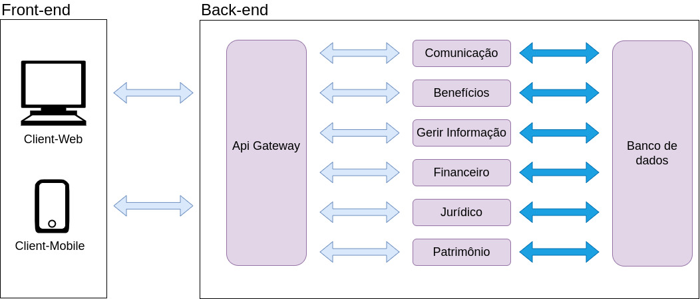
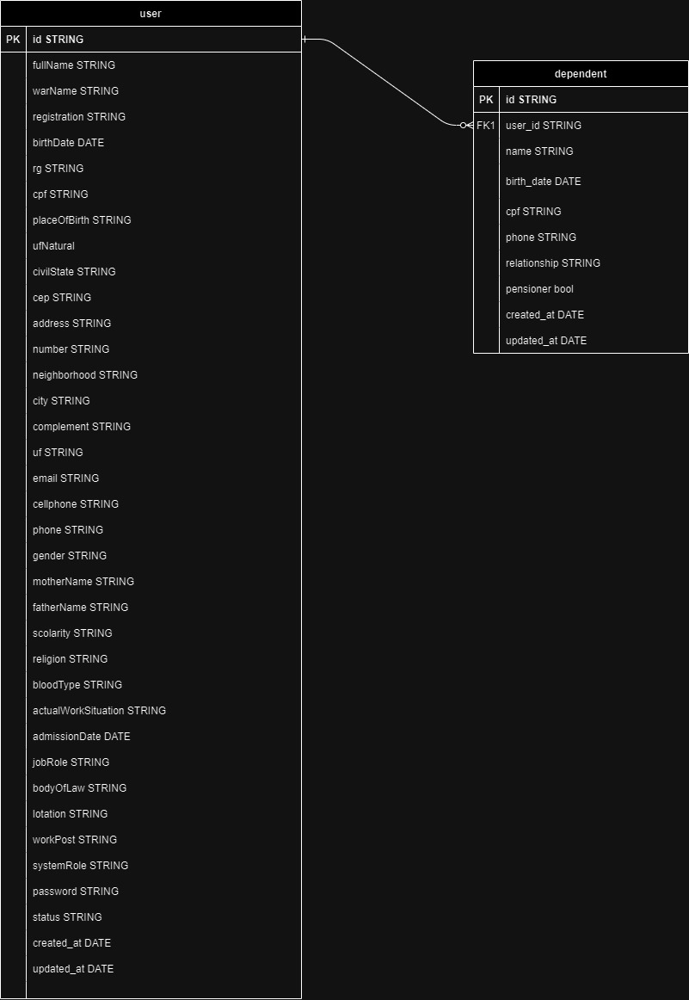

Documento de Arquitetura
1. Introdução
Este Documento de Arquitetura de Software tem como objetivo fornecer uma descrição detalhada dos principais aspectos arquiteturais da solução de software do projeto SINDPOL. Ele documenta informações e decisões relevantes relacionadas à arquitetura do projeto ao longo de seu desenvolvimento.
O SG_SINDPOL é um sistema desenvolvido para auxiliar as diversas atividades de gestão que o SINDPOL. Seu objetivo é fornercer uma ferramenta que resolva os problemas de gestão do sindicato, assim como ambito do jurídico.
2. Relações
2.1. Visão Geral da Arquitetura
Para esse sistema, pensamos em uma solução baseada em microserviços, onde cada cluster do projeto será um desses microserviços. Para Front-end do sistema optamos por fazer dois clients, um web e um mobile, que fará a comuinicação com os microserviços do sistema através de uma gateway. Os microserviços do sistema são os: comunicação, benefícios, gerir informações, financeiro, jurídico e de patrimônio, como podemos ver no diagrama abaixo:

3. Serviços
3.1. Frontend
O Front End é a Interface de comunicação entre o Usuário e o Sistema.
3.2. Api Gateway
O Api Gateway é utilizado como um mutex para a comunicação entre a interface de usuário e os outros micro-serviços. Dessa forma, ao receber uma requisição o gateway atua como uma ponte entre o front end e o serviço desejado. Atualmente, esse serviço é responsável por fazer o tratamento das requisições entre os microsserviços de comunicação, benefício, gerir informações, financeiro , jurídico e patrimônio.
3.3. Comunicação
O serviço de comunicação foi planejado para lidar com tudo que fosse relacionado com a comunicação do sistema. Dessa maneira, toda a parte de notificação, agendamento de reunião, contato com o sindicato ou feedback dos sindicalizados fica como responsabilidade desse serviço.
3.4. Benefício
O serviço de benefício é responsável por gerir tudo que esta relacionado com os benefícios de se tornar um sindicalizado. Dessa formar, tanto o cadastro como a geração de relatórios de uso de benefícios, estarão dentro desse serviço e além de gerar as carteirinhas do sindicalizados.
3.5. Gerir informações
O serviço de gerir informação foi planejada para fazer o controle dos sindicalizados, assim como as dos gestores do sindicato. Ele é responsável pelas funcionalidades de cadastro dos membros do sindicato e na geração de relatórios a respeito dos membros afiliados.
3.6. Financeiro
O serviço de financeiro foi construido com o objetivo de fazer todo controle financeiro do sistema. Então esse serviço fica responsável por todo o controle do fluxo de entrada e saída do orçamento do sindicato, assim como o pagamento e geração dos boletos necessários para a manutenção do sindicato.
3.7. Jurídico
O serviço de jurídico é o serviço para os advogados associados do sindicato. Ele possui de funcionalidades relacionadas ao cadastro de advogados/escritórios de advocacia, até o acompanhamento dos processos abertos do sindicato ou do sindicalizo, além disso ele possui funcionalidades que facilitam o trabalho dos advogados, como a verificação de assinaturas digitais ou importação de processos existentes.
3.8. Patrimônio
O serviço de patrimônio foi pensado para controlar todo o patrimônio do sindicato, então ele tem a responsabilidade de cadastrar esses bens no sistema, assim como gerar um relatório sobre eles, gerar etiquetas de identificação e fazer o controle de doações que o sindicato pode fazer para os sindicalizados.
4. Tecnologias
4.1. FastApi
Conhecido por sua velocidade e desempenho, o FastAPI é um framework web de código aberto baseado em Python, projetado para construir APIs de maneira rápida e escalável. Com suporte nativo para tipos de dados em Python, o FastAPI proporciona uma documentação automática interativa e de uso intuitivo, simplificando o processo de desenvolvimento de APIs eficientes.
4.2. Python
Python, uma linguagem de programação de alto nível e interpretada, é reconhecida pela sua legibilidade e simplicidade. Sua versatilidade se destaca em diversos campos, abrangendo desde o desenvolvimento web até a análise de dados, a automação e a inteligência artificial.
4.3. React
O React, desenvolvido pelo Facebook, é uma biblioteca JavaScript de código aberto usada para construir interfaces de usuário, especialmente para aplicações de página única. Ele viabiliza a criação de componentes reutilizáveis, impulsionando a construção de interfaces interativas. Com seu modelo de programação declarativo, o React simplifica a criação de aplicativos web eficazes e de alto desempenho.
4.4. PostgreSQL
O PostgreSQL é um sistema de gerenciamento de banco de dados relacional de código aberto. Com recursos avançados de armazenamento e recuperação de dados, o PostgreSQL garante a integridade, segurança e escalabilidade de informações. Além de suportar a linguagem SQL padrão, ele oferece extensões para funcionalidades adicionais, como tipos de dados personalizados e consultas complexas.
4.5. Docker e Docker Compose
Docker é uma plataforma de virtualização de contêiner que viabiliza o empacotamento e a distribuição de aplicativos com suas dependências em ambientes isolados. Ele usa contêineres independentes e eficientes para encapsular aplicativos, simplificando sua implantação consistente e reproduzível em diferentes ambientes.
Docker Compose é uma ferramenta que permite a definição e execução de aplicativos Docker compostos por múltiplos contêineres. Com o Compose, é possível configurar serviços usando um arquivo YAML, facilitando assim a gestão e a execução de aplicativos complexos.
5. Visão de dados
Devido a implementação de novas funcionalidades e principalmente após a implementação de perfis de usuário, tivemos refatorações nas tabelas do banco de dados, resultando na seguinte modelagem:

6. Referências
[1] React (software). React. Disponível em: https://en.wikipedia.org/wiki/React_(software).
[2] fastApi. FastApi. Disponível em: https://fastapi.tiangolo.com/.
[3] About PostgreSQL. PostgreSQL. Disponível em: https://www.postgresql.org/about/.
[4] About Python. Python. Disponível em: https://www.python.org/about/.
[5] GUEDES, Marylene. O que é o Docker e como ele funciona? TreinaWeb. Disponível em: https://www.treinaweb.com.br/blog/no-final-das-contas-o-que-e-o-docker-e-como-ele-funciona.
7. Histórico de Revisão
| Data | Versão | Modificação | Autor |
|---|---|---|---|
| 19/10/2023 | 0.1 | Abertura do documento. | Mateus Cunha Maia |
| 22/10/2023 | 0.1 | Adição do diagrama de dados | Mateus Cunha Maia |
| 11/12/2023 | 0.1 | Atualização do diagrama de dados | Eduardo Belarmino Silva |